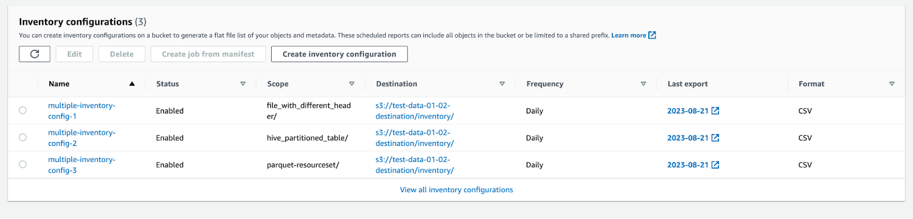

Scale Amazon S3 OCF Connector¶
Alation Cloud Service Applies to Alation Cloud Service instances of Alation
Customer Managed Applies to customer-managed instances of Alation
Scaling a connector is sometimes required when dealing with large data sets. You can follow the recommended best practices to use Amazon S3 OCF connector at scale.
Inventory Prefix¶
You can use the inventory name prefix approach to catalog only the objects that are required. This allows you to catalog more relevant data.
Use Inventory Prefix¶
After configuring the S3 inventory for the S3 connector, you need to configure the Amazon S3 inventory to use prefixes. On how to configure the inventory, refer to Configure Inventory.
To configure the use of prefixes:
In the inventory configuration, go to Inventory scope > Prefix.
Add a prefix that you want to include in the inventory report.
Refer to the screenshot below that displays three inventory configurations to match with the prefix in the Scope column:

The Amazon S3 OCF connector will then ingest the relevant data into Alation.
Sample Scenario¶
Consider a bucket, domain-data, in S3 that contains multiple folders and has the following folder tree structure:
└── domain-data
├── cache
│ ├── 2023-01-01
│ └── 2023-01-02
├── dev-env
│ ├── database
│ │ └── tables
│ │ ├── customer
│ │ ├── engineering
│ │ └── sales
│ ├── dummy
│ └── sample
├── logs
│ ├── 2022
│ └── 2023
├── prod-env
│ ├── database
│ │ └── tables
│ │ ├── customer
│ │ ├── engineering
│ │ └── sales
│ ├── dummy
│ └── sample
├── test-env
│ ├── database
│ │ └── tables
│ │ ├── customer
│ │ ├── engineering
│ │ └── sales
│ ├── dummy
│ └── sample
└── uat-env
├── database
│ └── tables
│ ├── customer
│ ├── engineering
│ └── sales
├── dummy
└── sample
You might be interested in cataloging only the following directories and their subdirectories:
prod-env/database/tables
uat-env/database/tables
To achieve this, you can create two inventory reports to catalog only the objects that are under these directories:
One with the prefix:
prod-env/database/tablesSecond with the prefix:
uat-env/database/tables
Schema Path Pattern¶
You can use the schema path pattern approach to extract columns in CSV (TSV/PSV) and Parquet files. The goal is to identify the logical schema and use it as a schema path pattern.
Use Schema Path Pattern¶
Analyze the data stored in S3 bucket(s) and identify each logical schema. For more information, refer to Schema Path Pattern.
Create regular expressions (regex) consisting of single or multiple patterns.
Go to Metadata Extraction > Schema Extraction configuration.
Enable Use Schema Path Pattern and add the created regex. For more information, refer to Schema Extraction Configuration.
Run the schema extraction job. This will use the defined pattern in the logical schema for extraction.
Sample Scenario¶
Consider the customer and engineering data sets in an enterprise application that are divided in the logical schema.
The customer data is partitioned by date whereas the engineering data is partitioned using the Hive partition style.
tables
├── customer
│ ├── 2023-01-01
│ │ ├── data1.csv
│ │ └── data2.csv
│ └── 2023-01-02
│ ├── data1.csv
│ └── data2.csv
├── engineering
│ ├── country=IN
│ │ └── state=GJ
│ │ ├── data1.parquet
│ │ └── data2.parquet
│ └── country=US
│ └── state=CA
│ ├── data1.parquet
│ └── data2.parquet
In the customer table, the metadata (or columns) in data1.csv and data2.csv files are the same across 2023-01-01 and 2023-01-02. Similarly, in the engineering table, the metadata (or columns) of the data1.parquet and data2.parquet file are the same across country=IN/state=GJ and country=US/state=CA.
Now, if you extract columns for each CSV or Parquet file, it would lead to an overhead of hundreds of files.
The best approach is to extract columns of any one CSV file for the customer data table and any one Parquet file for the engineering table.
Multiple File System Sources¶
You can use this approach to organize the Amazon S3 data in the Alation catalog with less interaction to other FS data sources in Alation. The goal is to efficiently manage data in Alation.
Sample Scenario¶
Consider a dataset stored in Amazon S3 that includes multiple domains:
Region (APAC, ASIA, and so on)
Organization (Sales, Customer, and so on)
The best approach is to create two file system sources in Alation:
One for a specific region, for example, APAC.
If for the APAC region, there are fewer updates to the S3 data, you can configure a separate job schedule for this file system source. For other regions, you might need to configure more frequent job schedules. This approach will ensure that you don’t need to run frequent extractions on the buckets that have few updates.
Second for a specific domain, for example, Sales.
If you no longer need the data for any of the specific domains, you can easily delete the corresponding file system source without impacting any other domain as domains are cataloged as separate file system sources.